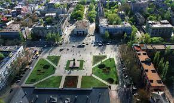
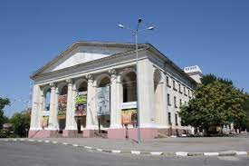
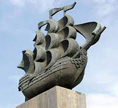

|  |
"Херсон - це Україна!" |
Херсон — місто-герой, обласний центр на півдні України
Херсон важливий економічний центр півдня України та адміністративний центр Херсонської області.
Площа міста - 65,2 км.кв. Чисельність населення складає 289 тис. осіб.
Визначні пам'ятки херсона

|
"Херсонська фортеця"Херсонська фортеця - це комплекс будівель та залишків оборонних споруд старої фортеці Олександр-Шанц, яка поклала початок сучасному місту Херсону. Фортеця була побудована в 1778 році генералом Ганнібалом. Будівництво Херсонської фортеці вели війська місцевого гарнізону. Нині залишки валів та брами фортеці розташовані на території міського парку (парк Херсонська Фортеця). За часів радянської влади було розібрано більшу частину споруд фортеці. До наших днів збереглася лише невелика частина фортеці: кількасот метрів фортечних валів, Очаківська та Московська (Північна) брами, будівля Адміралтейського арсеналу, пороховий льох та комплекс Катерининського собору. |
|  |
"Херсонський обласний академічний музично-драматичний театр імені Миколи Куліша"Херсонський обласний академічний музично-драматичний театр ім. М. Куліша — обласний академічний музично-драматичний театр, один із найбільших театрів Південної України, головна театральна сцена області. Театральне мистецтво в Херсоні бере свій початок з 1830-х років. У 1823—1828 роках дворянство Херсонської губернії придбало будинок генерала Лобрі і в 1830 роках пристосувало одне з приміщень його для театру, в якому і тулилося сценічне мистецтво близько 50 років. У серпні 1846 року приїжджав М. С. Щепкін, взявши участь у виставі херсонського театру, згодом писав, що йому сподобався місцевий колектив, сподобалась доброзичлива публіка, але дуже не сподобалося театральне приміщення — тісне і незатишне. Херсонський глядач вже тоді любив свій театр. Навіть таке приміщення, як правило, було переповненим. У 1883 р з ініціативи губернатора О. С. Ерделі на засіданні міської думи вирішено розпочати в Херсоні будівництво приміщення театру. Проект здійснив архітектор В. О. Домбровський, який взяв за основу приміщення Одеського оперного театру. Відкриття Херсонського Міського театру відбулося 1-го жовтня 1889 року. 6 листопада 1936 року відбулася прем'єра вистави «Переможці смерті» (п'єса В. Власова), в Херсоні відкрився новий театр. Називався він Херсонський міський український драматичний театр, потім Херсонський обласний український музично-драматичний театр, із 1990 року — ім. Миколи Куліша, а в 2005 році Херсонський обласний академічний музично-драматичний театр ім. М. Куліша. У різні часи в театрі працювали: В. Данченко, Л. Свободіна, І. Гранкін, В. Свєтланова, О. Каро, Г. Шевченко, М. Литвиненко, А. Щітка, Д. Короленко, Г. Мікуцька, А. Дмітрієва, Л. Мосєйчук, В. Галл-Савальська, Н. Литвиненко, В. Г. Балаш, І. Басюк, О. Горбенко та багато інших. Серед провідних артистів театру — народні артисти України А. Ф. Манойло, Р. А. Рубльова. У часи Німецько-радянської війни старе приміщення театру було підірване, але у 50-их роках XX ст. було збудоване нове приміщення, яке збереглося до наших днів. Генеральний директор-художній керівник театру — заслужений діяч мистецтв України Олександр Андрійович Книга. |
|  |
Пам'ятник «Фрегат»«Фрегат» - це широко відомий пам'ятник першим кораблебудівникам, який був побудований в 1972 році на честь перших кораблів Чорноморського флоту. Ними були 66-гарматний лінкор під назвою «Слава Катерини» і 50-гарматний фрегат з гучною назвою «Георгій Побідоносець».Зі стапелів адміралтейської верфі в Херсоні ці кораблі були спущені в 1783 році. Спуск на воду фрегата і лінкора в 1783 році приїхали спостерігати імператриця Катерина ІІ та її колега з Австрії імператор Священної Римської Імперії Йосип ІІ. Саме на честь цих глав великих держав були названі перші кораблі Чорноморського флоту. Пам'ятник першим кораблебудівникам встановлений на високому постаменті і має вигляд величезного трищоглового парусника, висота якого досягає 15 метрів. «Фрегат» виконаний з бетону, листової міді і граніту. Над проектом і створенням цього пам'ятника трудилися такі відомі скульптори, як І. Білокур, В. Шкуропад, В. Потребенко, а також архітектори І. Сікало та Ю. Тарасов. |